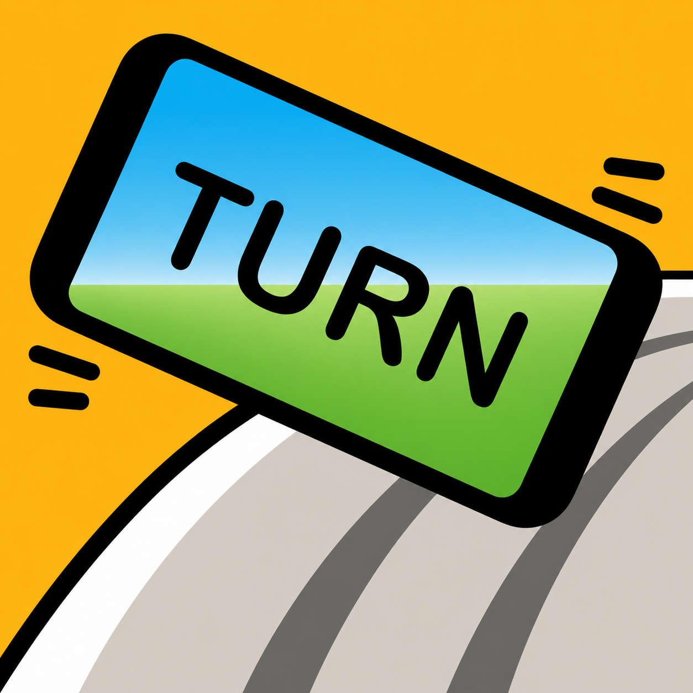

TURN personality
Chunky outlines, offset shadows, large type and playful colour fields.
A living reference built from TURN’s actual interaction patterns. Standardize the grammar, not the personality.

TURN keeps its black ink, warm paper, hard shadows and saturated colour while reusable controls receive stable semantics.
Chunky outlines, offset shadows, large type and playful colour fields.
Radio buttons, Checkboxes, range inputs, headings and disclosures share one visual grammar.
Green is not used merely because a section is special, and component type does not determine heading appearance.
| Area | Normative rule | Use |
|---|---|---|
| Primary action | Pink 500 and pill | Install TURN, Race this track, Race this car |
| Utility | Paper | Settings, How to Play, Give Feedback |
| Navigation | Orange 500 | Close, Back, Leave, Brake · Reverse |
| Difficulty | Easy green 200, Medium yellow 200, Hard red 200 | Text remains mandatory |
| Form controls | Paper idle, Pink selected, Blue focus | Native radio, checkbox and range semantics |
| Disclosure | Blue trigger, Paper panel | Native details and summary |
Components use semantic variables. Semantic variables map to the primitive palette. Raw colours stay available for expressive track art, but reusable interface elements do not choose colours ad hoc.
Every normative colour value in design-tokens.css, shown without semantic interpretation.
--turn-ink#08090a--turn-paper#fff8e8--turn-white#fffdf6--turn-road#44494f--turn-muted#d6d0c2--turn-yellow-600#ffbd12--turn-yellow-400#ffd43b--turn-yellow-200#ffe087--turn-blue-600#35b8e7--turn-blue-500#38d9ff--turn-blue-300#68c8f2--turn-blue-200#8ed8ff--turn-pink-500#ff4fa3--turn-pink-200#ff8caf--turn-red-500#ff6b6b--turn-red-200#ff9b91--turn-green-500#8ce99a--turn-green-200#d9f5c2--turn-orange-500#ff7b54--turn-orange-200#ffb89fThese are the variables components should consume. The final column explains the stable meaning, not a specific screen.
| Preview | Semantic variable | Maps to | Normative use |
|---|---|---|---|
| Surfaces | |||
--turn-surface-page | var(--turn-paper) | Default light page and panel surface. | |
--turn-surface-raised | var(--turn-white) | Cards and controls raised above Paper. | |
| Actions | |||
--turn-action-primary | var(--turn-pink-500) | Main forward flow: Install and Race. | |
--turn-action-utility | var(--turn-paper) | Quiet tools such as Settings and How to Play. | |
--turn-action-information | var(--turn-blue-500) | Information and active guidance. | |
--turn-action-success | var(--turn-green-500) | Confirmed successful state, not generic emphasis. | |
--turn-action-warning | var(--turn-yellow-400) | Attention and reversible caution. | |
--turn-action-danger | var(--turn-red-500) | Invalid, destructive and error states. | |
--turn-action-navigation | var(--turn-orange-500) | Close, Back, Leave and Brake · Reverse. | |
| Native forms and disclosures | |||
--turn-form-control-idle | var(--turn-paper) | Unselected radio and checkbox surface. | |
--turn-form-control-selected | var(--turn-pink-500) | Selected radio and checkbox state. | |
--turn-form-control-focus | var(--turn-blue-500) | Visible keyboard focus. | |
--turn-disclosure-trigger | var(--turn-blue-300) | Informational disclosure summary. | |
--turn-disclosure-panel | var(--turn-paper) | Expanded disclosure content. | |
| Difficulty | |||
--turn-difficulty-easy | var(--turn-green-200) | Easy label support colour. | |
--turn-difficulty-medium | var(--turn-yellow-200) | Medium label support colour. | |
--turn-difficulty-hard | var(--turn-red-200) | Hard label support colour, distinct from danger. | |
--turn-difficulty-locked | var(--turn-muted) | Unavailable or future track. | |
| Driving controls | |||
--turn-control-gas | var(--turn-green-500) | Gas. | |
--turn-control-drift | var(--turn-blue-500) | Drift. | |
--turn-control-boost | var(--turn-yellow-400) | Available Boost charge. | |
--turn-control-boost-empty | var(--turn-yellow-200) | Unfilled Boost meter. | |
--turn-control-brake | var(--turn-orange-500) | Brake and Reverse. | |
Existing selectors remain stable while migration continues. New components should use the --turn-* variables above.
| Existing variable | Normative target | Status |
|---|---|---|
--ink | var(--turn-ink) | Compatibility alias |
--paper | var(--turn-paper) | Compatibility alias |
--cyan | var(--turn-blue-500) | Compatibility alias |
--pink | var(--turn-pink-500) | Compatibility alias |
--yellow | var(--turn-yellow-400) | Compatibility alias |
--lime | var(--turn-green-500) | Compatibility alias |
--m8-ink | var(--turn-ink) | Home compatibility alias |
--m8-cream | var(--turn-paper) | Home compatibility alias |
--m8-pink | var(--turn-pink-500) | Home compatibility alias |
--m8-yellow | var(--turn-yellow-600) | Home compatibility alias |
--m8-blue | var(--turn-blue-300) | Home compatibility alias |
Rule: aliases preserve existing visuals. They are not a second design system.
Colour reinforces progression but never replaces the label.
HTML structure communicates meaning. Shared tokens and component rules communicate visual hierarchy.
ABOUT TURN is visually a link but semantically a button because it opens a dialog.
Legend and heading elements share one floating card-title treatment. Radio buttons and Checkboxes use the same shell and differ through a clear selected state.
Blue trigger, Paper panel. The decorative state symbol sits directly before the summary text. The native details element communicates expanded and collapsed state.
Game content is labelled rather than imitated. The system demonstrates the surrounding controls and hierarchy.
Top speed · Acceleration · Control · Drift
Paper content card with a Blue informational disclosure.
Guidance, pace notes, grip, surfaces and recovery.
Shared tokens and compatibility aliases are in production. Native form controls and disclosures now join the normative system.
design-tokens.css.